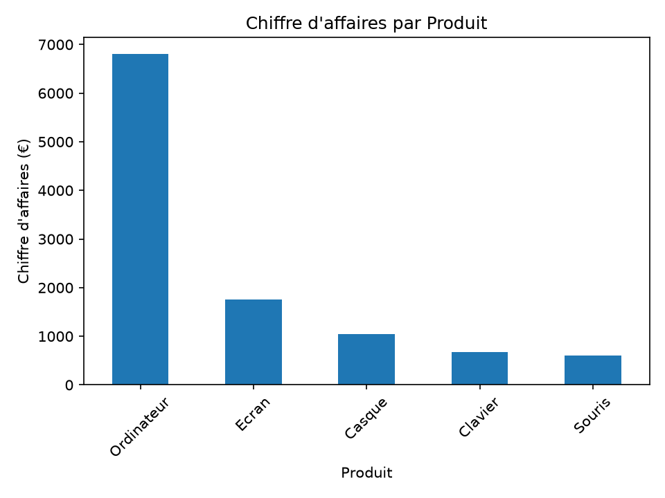
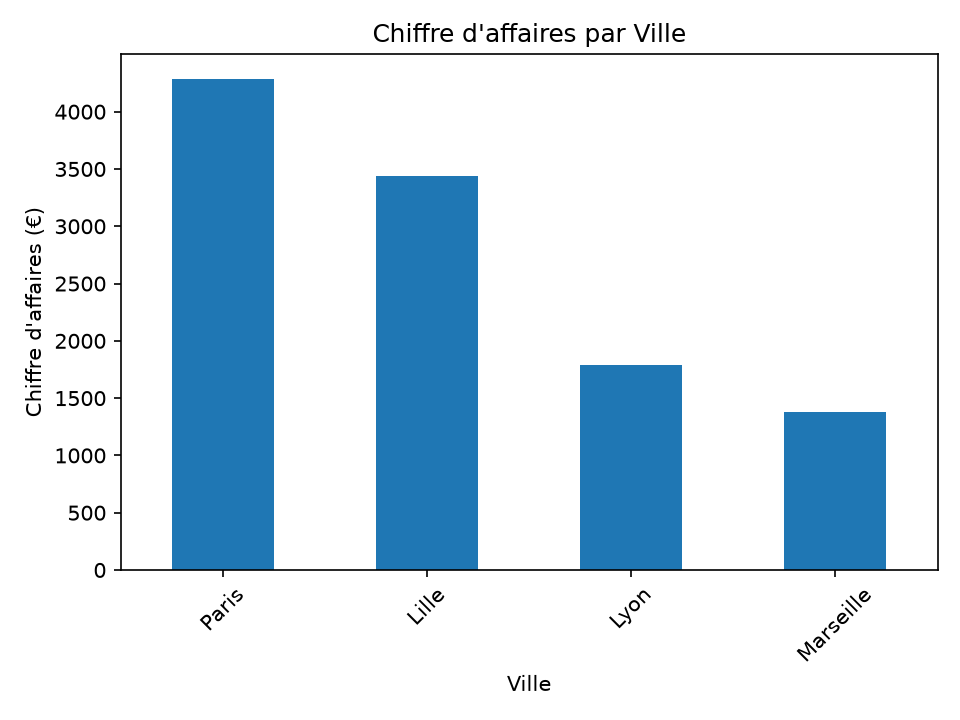
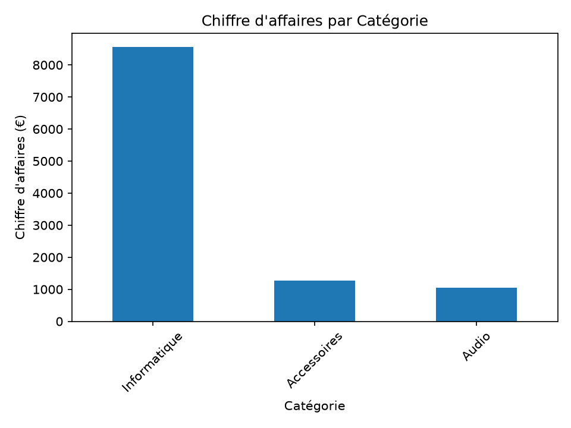
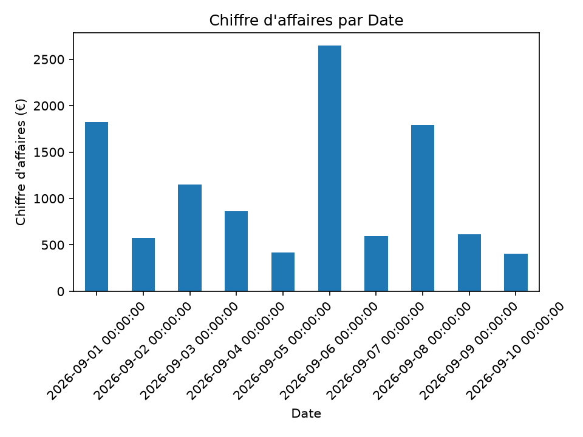
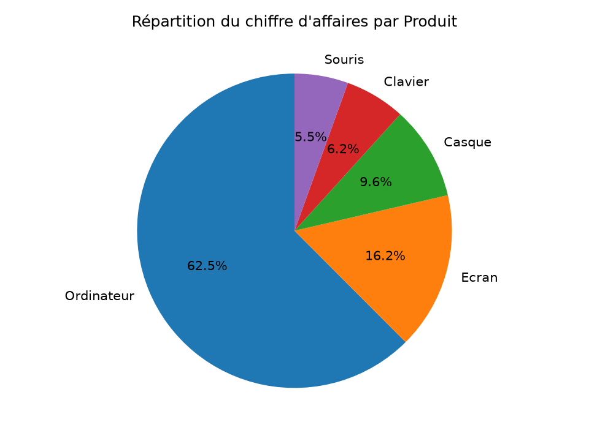

Ce rapport présente une analyse des ventes à partir des données enregistrées. Il permet d'évaluer les performances commerciales, d'identifier les produits les plus performants et d'observer la répartition du chiffre d'affaires par produit, par ville, par catégorie et par jour.
Synthèse des performances commerciales.
Chiffre d'affaires total
Quantités vendues
Nombre de produits distincts
Meilleur produit : Ordinateur — 6,800.00 €
Meilleure ville : Paris — 4,285.00 €
Meilleure catégorie : Informatique — 8,560.00 €
Ce tableau présente les quantités vendues,le chiffre d'affaires et son pourcentage générés.L'ordre est en fonction du chiffre d'affaire du plus important au moins. Il permet de comparer les performances commerciales et d'identifier les produits qui contribuent le plus au chiffre d'affaires total.
| quantite_totale | chiffre_affaire_total | pourcentage_CA_par_produit | |
|---|---|---|---|
| produit | |||
| Ordinateur | 8 | 6800 | 62.47 |
| Ecran | 8 | 1760 | 16.17 |
| Casque | 14 | 1050 | 9.65 |
| Clavier | 15 | 675 | 6.20 |
| Souris | 24 | 600 | 5.51 |
Ordinateur vient largement en tête avec un chiffre d'affaires de 6800 Euros puis Ecran avec 1760 après arrive Casque avec 1050 en suite Clavier avec 675 et en fin Souris avec 600 Euros
Ce tableau compare les ventes réalisées dans les différentes villes. Il permet de repérer les marchés géographiques les plus performants et ceux dans lesquels des actions commerciales pourraient être envisagées.
| quantite_totale | chiffre_affaire_total | |
|---|---|---|
| ville | ||
| Paris | 22 | 4285 |
| Lille | 18 | 3435 |
| Lyon | 13 | 1790 |
| Marseille | 16 | 1375 |
Paris occupe la première place avec un chiffre d'affaires de 4285 Euros.
Ce tableau regroupe les ventes par catégorie de produits. Il aide à comprendre quelles familles de produits génèrent le plus de chiffre d'affaires et à comparer leur poids dans l'activité commerciale..
| quantite_totale | chiffre_affaire_total | |
|---|---|---|
| categorie | ||
| Informatique | 16 | 8560 |
| Accessoires | 39 | 1275 |
| Audio | 14 | 1050 |
La catégorie informatique prend la première place avec un chiffre d'affaires de 8560 Euros.
Ce tableau présente les quantités vendues et le chiffre d'affaires pour chaque date. Il permet de suivre l'évolution quotidienne de l'activité et de repérer les journées les plus et les moins performantes.
| quantite_totale | chiffre_affaire_total | |
|---|---|---|
| date | ||
| 2026-09-01 | 7 | 1825 |
| 2026-09-02 | 5 | 575 |
| 2026-09-03 | 5 | 1150 |
| 2026-09-04 | 11 | 860 |
| 2026-09-05 | 8 | 420 |
| 2026-09-06 | 7 | 2650 |
| 2026-09-07 | 6 | 595 |
| 2026-09-08 | 4 | 1790 |
| 2026-09-09 | 9 | 615 |
| 2026-09-10 | 7 | 405 |
Nous constatons que le six septembre, l'entreprise a généré beaucoup plus de chiffre d'affaires que les autres jours avec un montant de 2650 Euros
Ces graphiques illustrent visuellement les tableaux ci-dessus

\n
\n
\n
\n
L'analyse des ventes réalisées sur la période étudiée permet d'obtenir une vision globale des performances commerciales. Avec un chiffre d'affaires total de 10 885 € pour 69 unités vendues, les résultats mettent en évidence des différences importantes entre les produits et les catégories.
Les ordinateurs constituent le principal moteur du chiffre d'affaires, avec 6 800 €, soit environ 62,5 % du total. La catégorie Informatique occupe également une place prépondérante, avec 8 560 € de chiffre d'affaires. Ces résultats montrent que les ventes reposent principalement sur les produits informatiques.
L'analyse par ville permet de comparer les performances commerciales selon la localisation, tandis que l'étude quotidienne met en évidence les variations du chiffre d'affaires au cours de la période. Ces informations peuvent aider à mieux comprendre la répartition des ventes et à identifier les axes d'amélioration.
En conclusion, cette analyse constitue une base utile pour orienter les décisions commerciales. Il serait pertinent de renforcer les actions autour des produits les plus performants, d'étudier les opportunités de développement pour les autres catégories et d'approfondir l'analyse des ventes par ville et par période. Une étude sur une période plus longue permettrait de confirmer ces tendances et d'identifier d'éventuelles évolutions saisonnières.